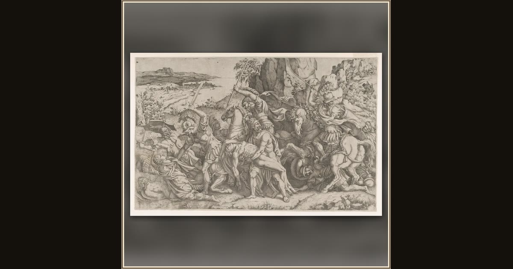

Battle around the Body of Patroclus
Anonymous, School of Fontainebleau · ca. 1543–ca. 1547 · met
Horsemen and foot soldiers struggle around Patroclus' naked body while a warrior lifts him from the ground, as the fierce fight over him breaks out anew (17.543–546). Explore its place in Homer's Iliad, Book XVII, line 543.